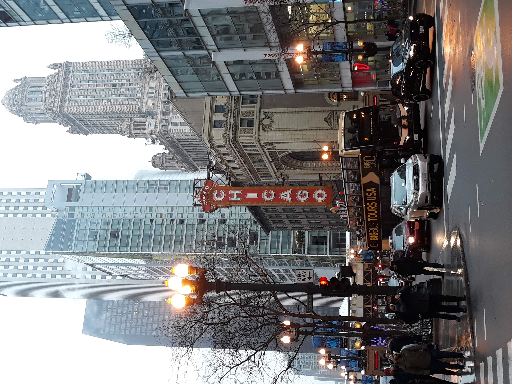
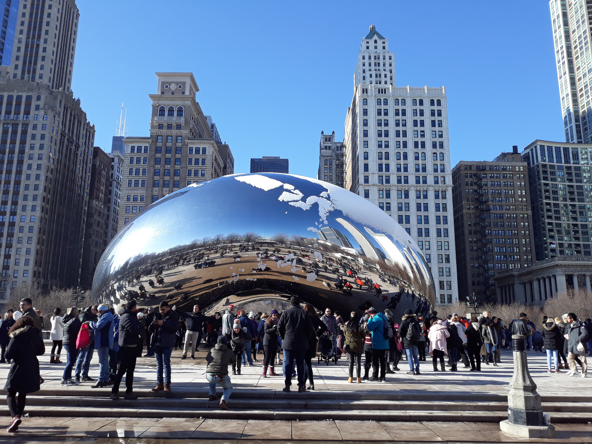
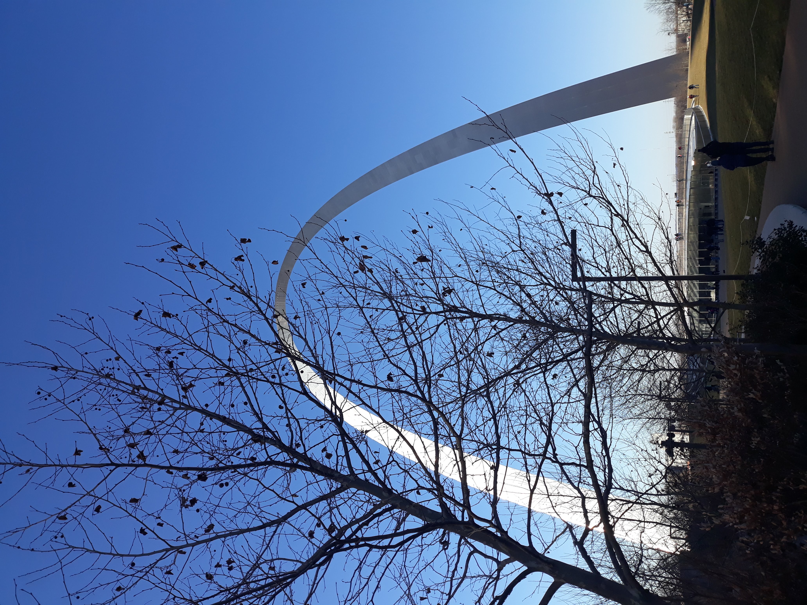
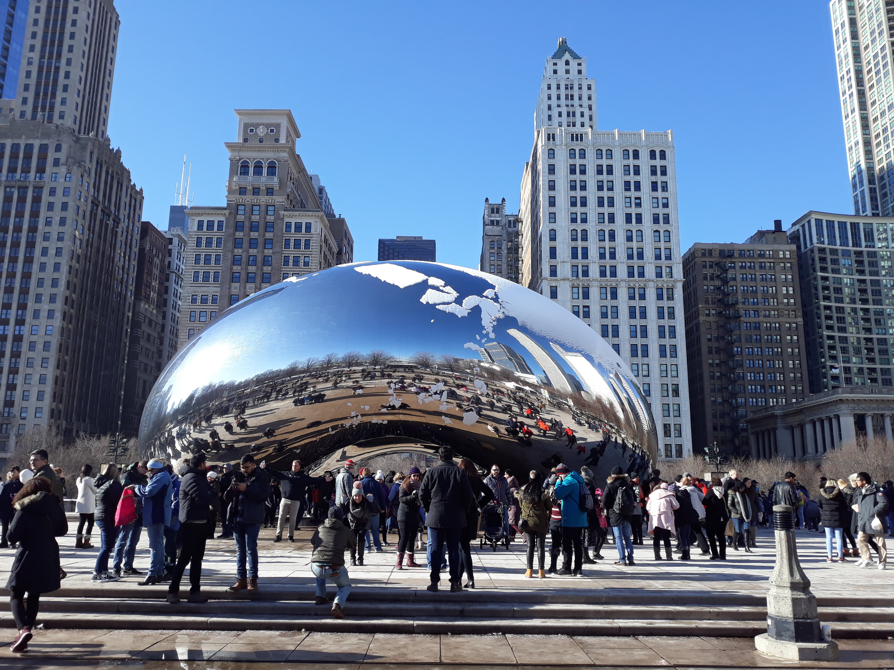

Estados Unidos
Chicago-IL
Cruzamento na Michigan Avenue em Chicago, próximo ao The Chicago Theater
Estultura Cloud Gate, também conhecida como The Bean (O Feijão), no Millennium Park em Chicago
Saint Louis-MO
Gateway Arch

Cruzamento na Michigan Avenue em Chicago, próximo ao The Chicago Theater
Estultura Cloud Gate, também conhecida como The Bean (O Feijão), no Millennium Park em Chicago
Gateway Arch